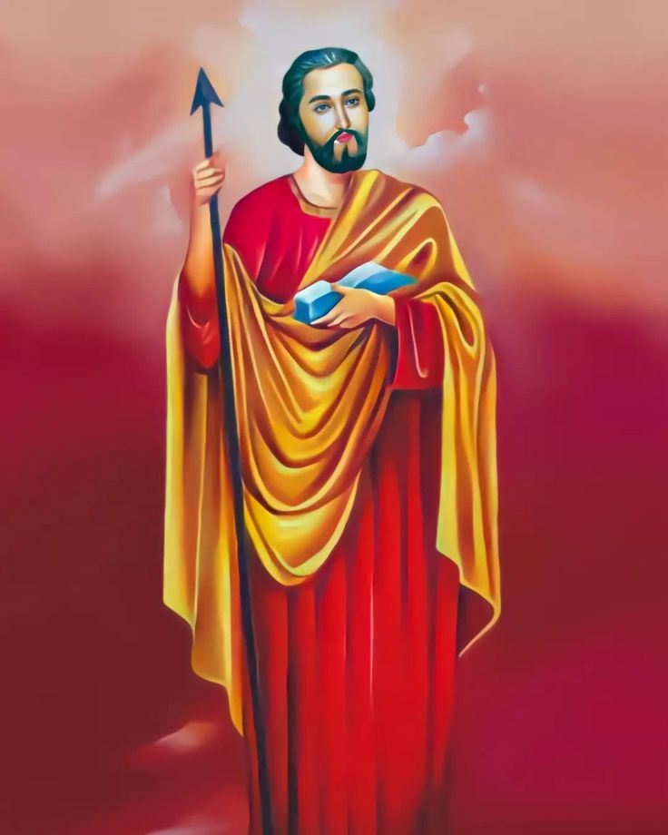

Parish Administration
Meet our parish priest, secretaries, and team serving the community faithfully.


Eucharistic Miracles
Learn about the miraculous presence of Christ in the Holy Eucharist.

Saints from India
Discover the holy men and women of India who lived lives of faith and sacrifice.